고3 10장 · 고1·고2 10장 · 1080×1350 · 캡션과 해시태그 포함
인스타 캡션의 주소는 눌리지 않습니다. 클릭되는 곳은 프로필 링크·스토리 링크 스티커·유료광고뿐입니다.
그래서 링크 허브를 따로 만들었습니다. 프로필에는 이 하나만 걸고, 그 안에서 전부 갈라집니다.
https://jayu0422-blip.github.io/daol105-susi/link/?src=ig
다올105 · 무료 내신 진단
허브에 들어간 목적지 — 고1·2 내신 진단 · 고3 수시 지원 라인 · 고3 상담 안내 ·
전화 · 유튜브 · 네이버 블로그 · 교습비등 게시표. 목적지가 늘어도 프로필은 안 건드립니다.
?src=ig 는 허브가 다음 페이지까지 자동으로 물려줍니다.
인스타로 들어온 사람은 어느 버튼을 눌러도 신청 기록에 「인스타그램」으로 남습니다.
붙이지 않으면 전부 「기타」로 쌓여 어디서 왔는지 알 수 없습니다.
스토리·유튜브·블로그용은 끝의 ig만
yt / naver / kakao / print 로 바꿔 쓰시면 됩니다.
2027학년도 수시 원서접수가 9월 7일(월)~11일(금)입니다. 시급합니다.
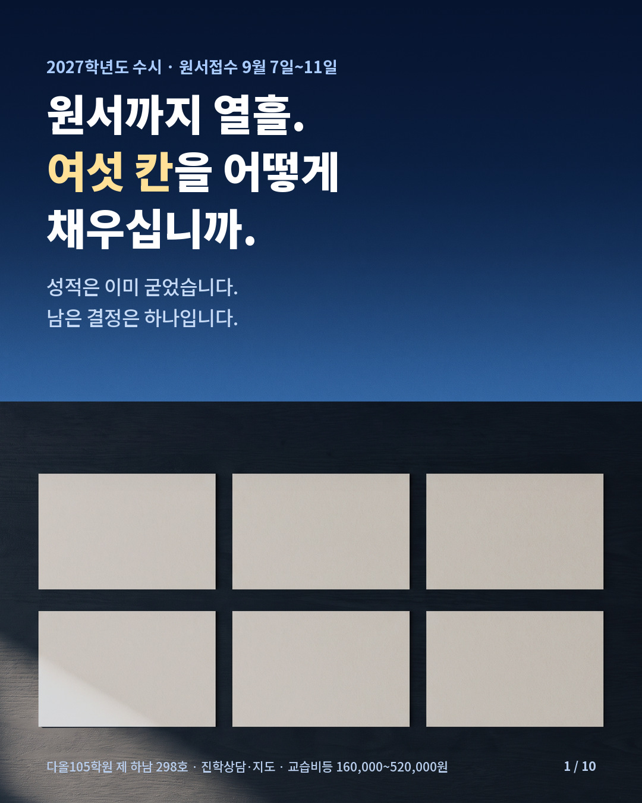
2027학년도 수시 원서 여섯 칸 배치 안내 카드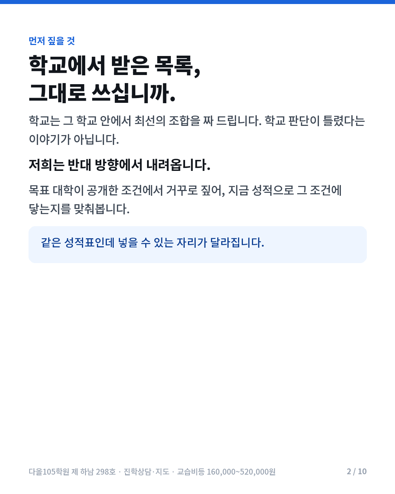
학교 추천 목록과 컨설팅 접근 방식 비교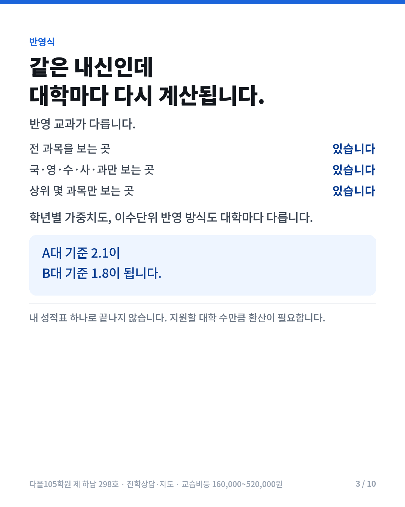
대학별 내신 반영 교과와 학년 가중치 차이 안내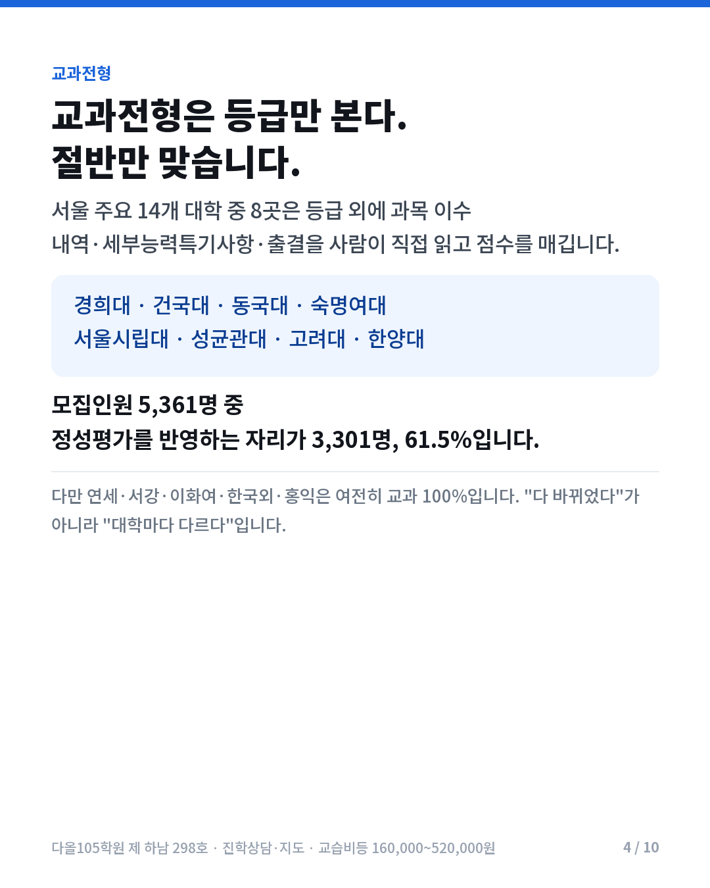
서울 주요 14개 대학 학생부교과전형 정성평가 반영 현황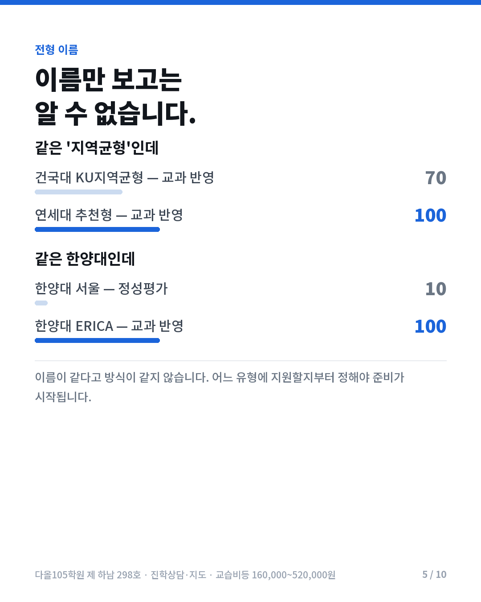
지역균형 전형 명칭별 교과 반영비율 차이 비교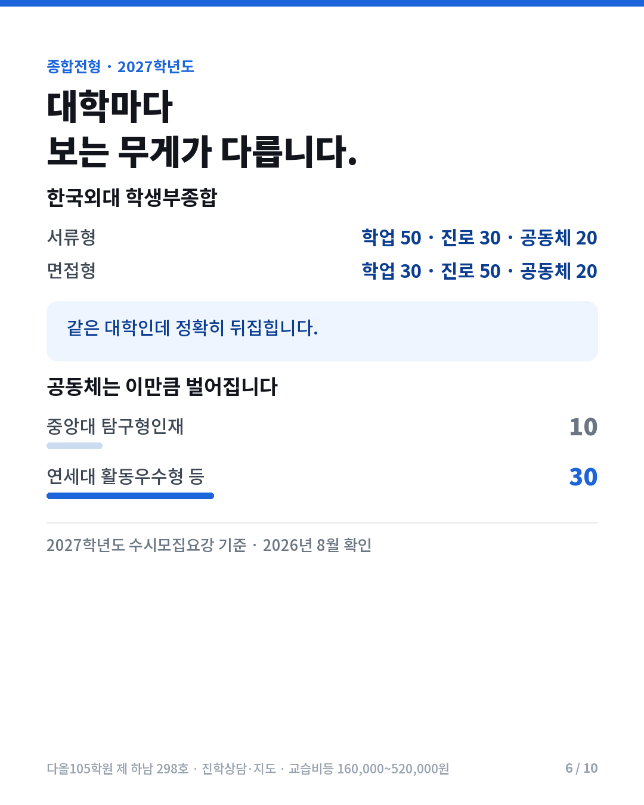
2027학년도 학생부종합전형 대학별 평가요소 반영비율 비교서울대 한양대 평가요소 반영비율 미공개 안내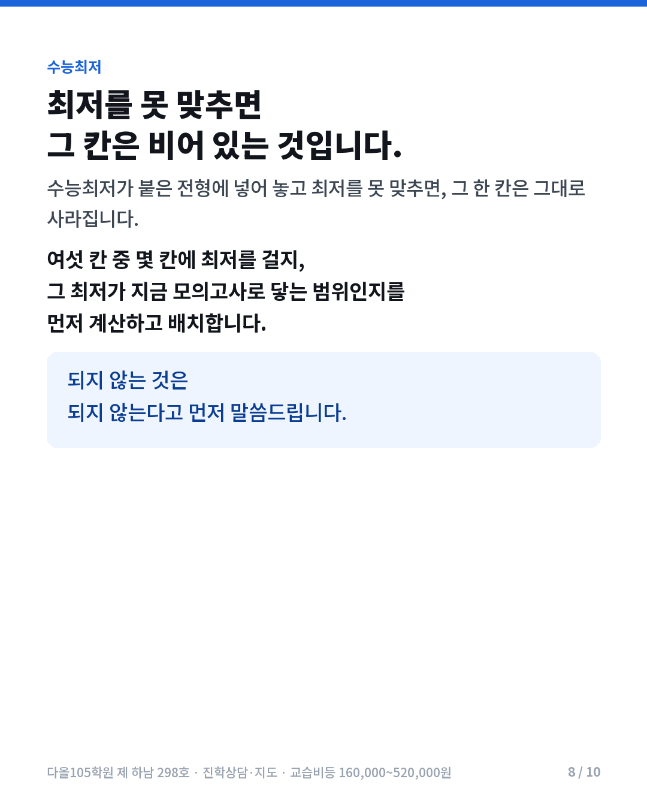
수시 수능최저학력기준 미충족 시 지원 칸 손실 안내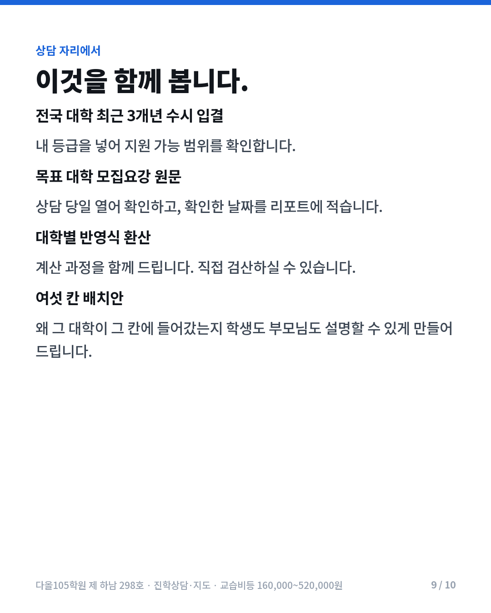
수시 상담에서 함께 확인하는 자료 목록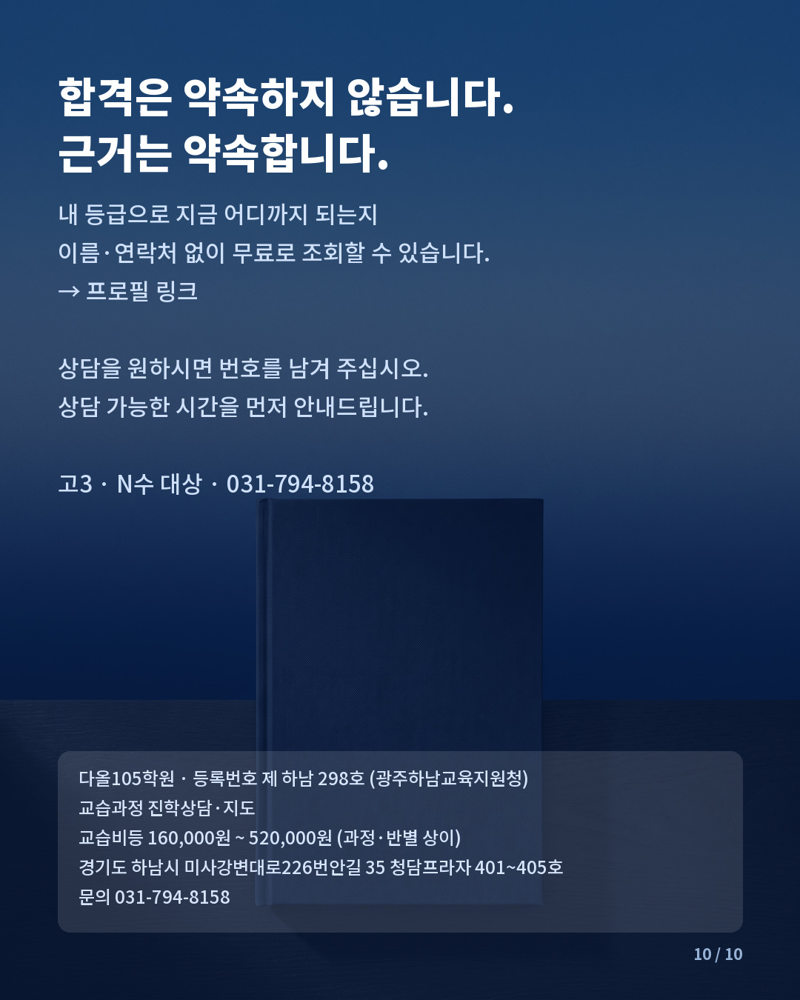
다올105학원 고3 수시 상담 안내 및 교습비등 표시원서까지 열흘 남았습니다. 여섯 칸을 어떻게 채우실 계획입니까. 성적은 이미 굳었습니다. 남은 결정은 어디에 넣느냐 하나입니다. 그런데 그 하나가 결과를 바꿉니다. ━━━━━━━━━━━━━━━━ ▸ 같은 내신인데 대학마다 다시 계산됩니다 반영 교과가 다릅니다. 전 과목을 보는 곳, 국·영·수·사·과만 보는 곳, 상위 몇 과목만 보는 곳이 다 다릅니다. 학년별 가중치도, 이수단위 반영 방식도 다릅니다. 그래서 A대 기준 2.1이 B대 기준 1.8이 됩니다. 내 성적표 하나로 끝나지 않습니다. ▸ 교과전형은 등급만 본다 — 절반만 맞습니다 서울 주요 14개 대학 중 8곳은 등급 외에 과목 이수 내역·세부능력특기사항·출결을 사람이 직접 읽고 점수를 매깁니다. 경희대 · 건국대 · 동국대 · 숙명여대 · 서울시립대 · 성균관대 · 고려대 · 한양대 모집인원 5,361명 중 정성평가를 반영하는 자리가 3,301명, 61.5%입니다. 다만 연세·서강·이화여·한국외·홍익은 여전히 교과 100%입니다. "다 바뀌었다"가 아니라 "대학마다 다르다"입니다. ▸ 전형 이름만 보고는 알 수 없습니다 같은 '지역균형'인데 건국대는 교과가 70%, 연세대는 100%입니다. 같은 한양대인데 서울캠은 정성평가 10%를 보고 ERICA는 교과 100%입니다. ▸ 비율을 공개하지 않는 대학도 있습니다 서울대와 한양대는 모집요강에 평가요소별 비율표가 없습니다. 그래서 저희도 요소 이름만 적었습니다. 다른 자료에서 이 두 대학의 비율 숫자를 보셨다면 출처를 확인해 보시기 바랍니다. ▸ 최저를 못 맞추면 그 칸은 비어 있는 것입니다 여섯 칸 중 몇 칸에 최저를 걸지, 그 최저가 지금 모의고사로 닿는 범위인지를 먼저 계산하고 배치합니다. 되지 않는 것은 되지 않는다고 먼저 말씀드립니다. ━━━━━━━━━━━━━━━━ 합격은 약속하지 않습니다. 근거는 약속합니다. 왜 그 대학이 그 칸에 들어갔는지, 학생도 부모님도 설명할 수 있게 만들어 드립니다. 내 등급으로 지금 어디까지 되는지 이름·연락처 없이 무료로 조회하실 수 있습니다 → 프로필 링크 2027학년도 수시 원서접수 2026. 9. 7(월) ~ 9. 11(금) 고3 · N수 대상 · ☎ 031-794-8158 ※ 위 숫자는 2027학년도 수시모집요강 및 각 대학 입학처 공개자료 기준(2026년 8월 확인)이며, 지원 전 반드시 해당 대학 입학처 게시본을 확인하셔야 합니다. ※ 본 상담은 합격을 보장하지 않습니다. ━━━━━━━━━━━━━━━━ 다올105학원 · 등록번호 제 하남 298호 (광주하남교육지원청) 교습과정 진학상담·지도 교습비등 160,000원 ~ 520,000원 (과정·반별 상이) 경기 하남시 미사강변대로226번안길 35 청담프라자 401~405호 ☎ 031-794-8158
#수시컨설팅 #수시상담 #입시컨설팅 #수시원서 #수시6장 #학생부교과전형 #학생부종합전형 #정시수시 #대입컨설팅 #고3맘 #고삼맘 #수험생맘 #입시맘 #고3엄마 #수시지원전략 #내신등급 #수능최저 #대학입시 #입시정보 #2027수시 #하남학원 #미사학원 #하남입시 #미사강변학원 #하남고 #미사고 #미사강변고 #풍산고 #신장고 #다올105
2학기 내내 유효합니다. 고3 게시 며칠 뒤에 올리세요.
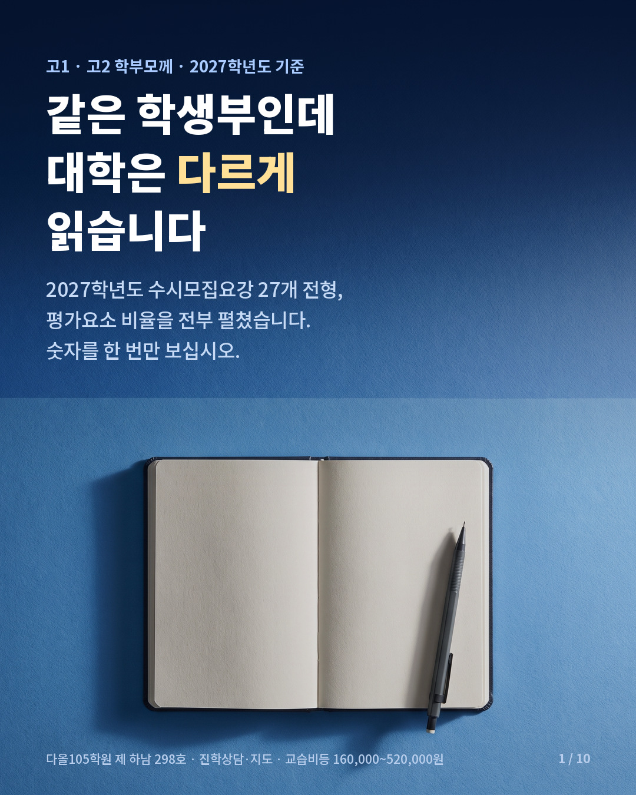
2027학년도 대학별 학생부종합전형 평가요소 비율 비교 카드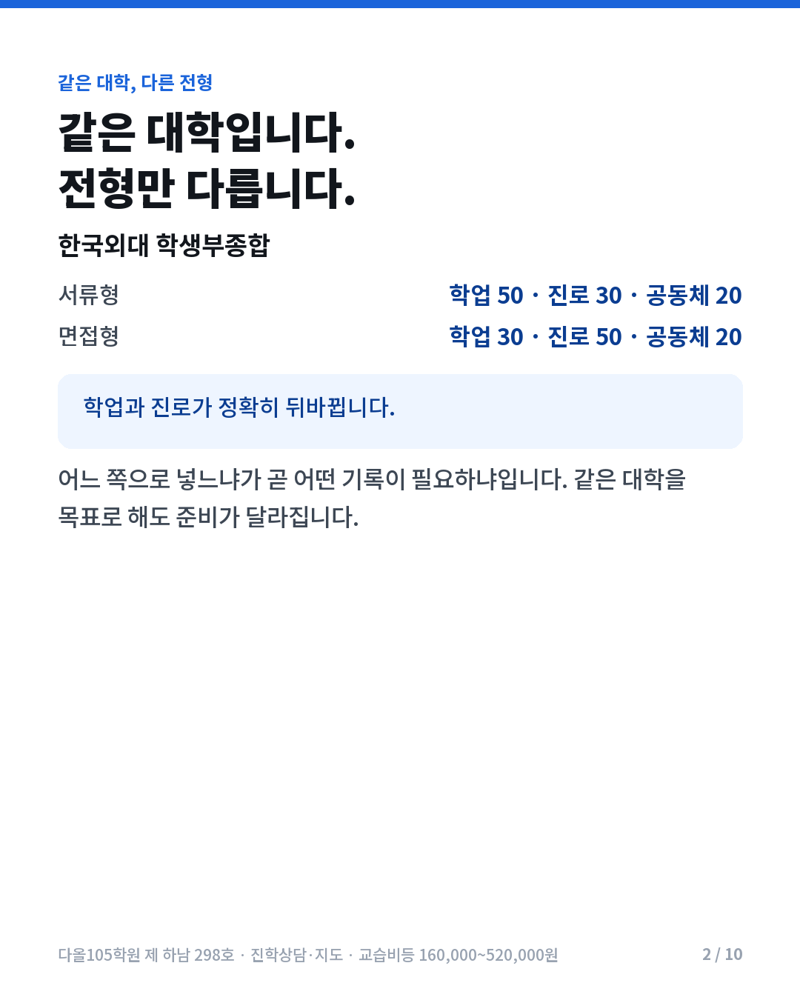
한국외대 서류형 면접형 평가요소 반영비율 역전 비교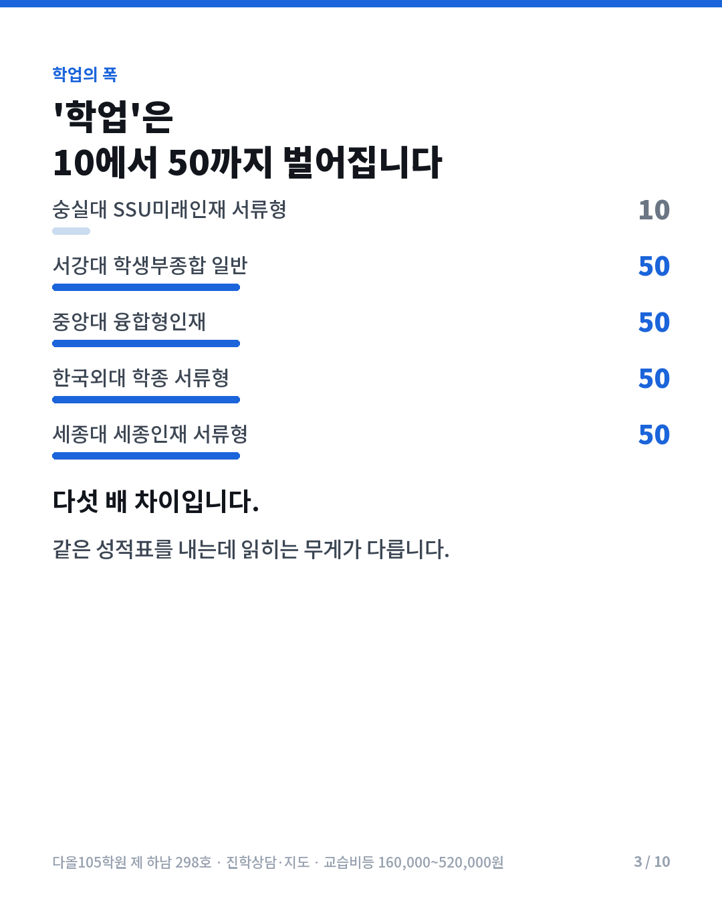
학업역량 반영비율 대학별 비교 숭실대 10 서강대 50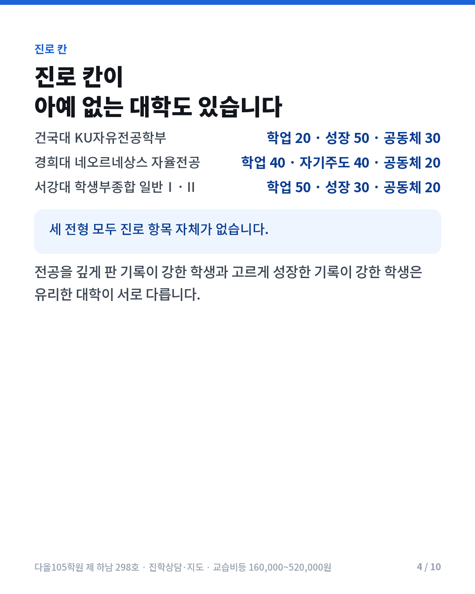
진로역량 항목이 없는 대학 전형 목록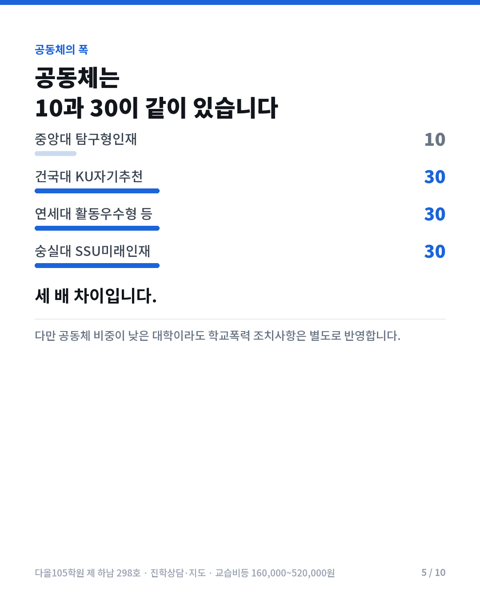
공동체역량 반영비율 대학별 비교 10과 30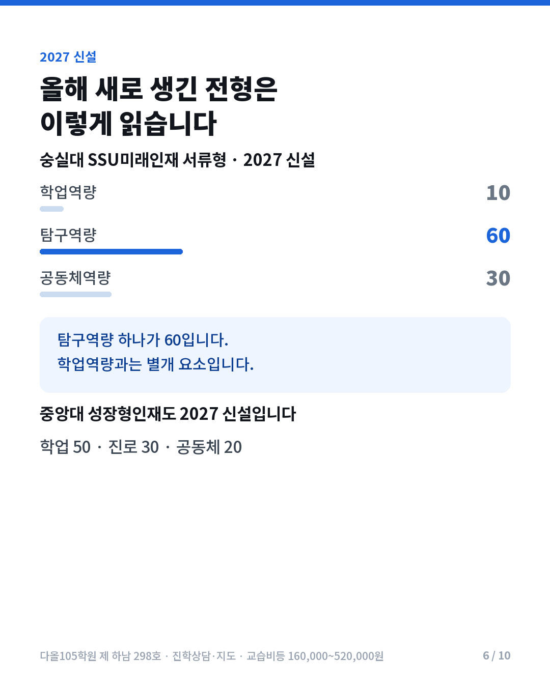
2027학년도 신설 전형 평가요소 반영비율 안내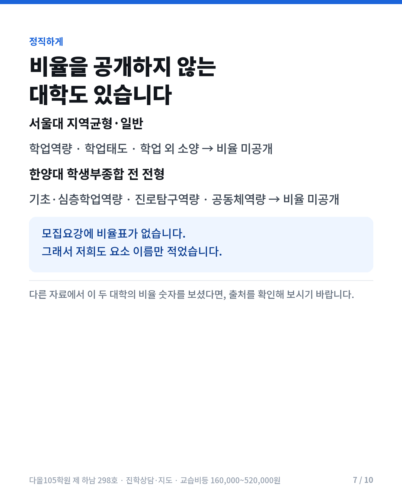
서울대 한양대 평가요소 반영비율 미공개 안내서울 주요 14개 대학 학생부교과전형 정성평가 반영 현황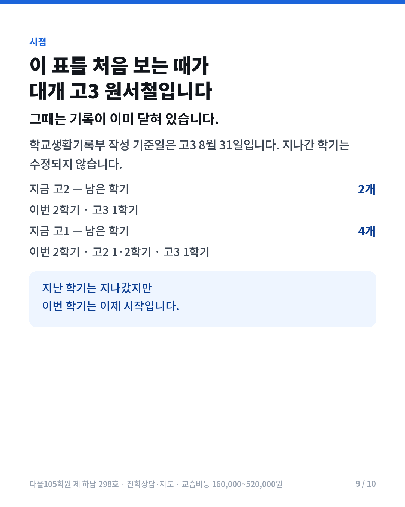
학교생활기록부 작성 기준일과 남은 학기 안내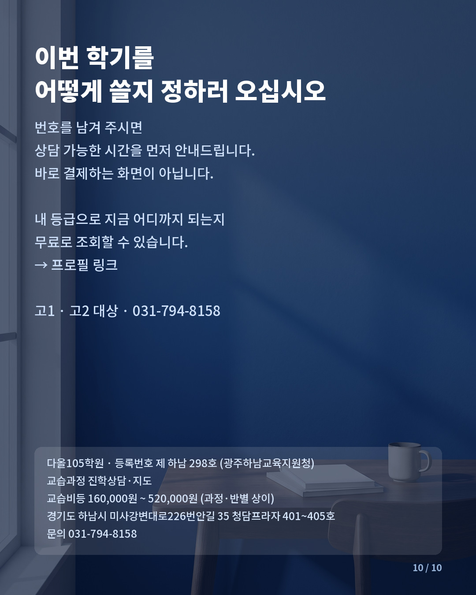
다올105학원 고1 고2 학기 상담 안내 및 교습비등 표시학생부가 좋아야 대학 간다. 그럼 어떻게 좋아야 하는지는 들으셨습니까. 수행평가 하고 동아리 열심히 하면 알아서 채워진다는 말, 틀린 건 아닙니다. 다만 아무도 그다음을 알려주지 않았을 뿐입니다. ━━━━━━━━━━━━━━━━ 2027학년도 수시모집요강 27개 전형의 평가요소 비율을 전부 펼쳤습니다. 같은 학생부를 놓고 대학이 얼마나 다르게 읽는지 숫자로 보십시오. ▸ 같은 대학인데 정확히 뒤집힙니다 한국외대 학생부종합 · 서류형 — 학업 50 · 진로 30 · 공동체 20 · 면접형 — 학업 30 · 진로 50 · 공동체 20 어느 쪽으로 넣느냐가 곧 어떤 기록이 필요하냐입니다. ▸ '학업'은 10에서 50까지 벌어집니다 숭실대 SSU미래인재 서류형 학업 10 서강대 · 중앙대 융합형 · 한국외대 서류형 · 세종대 서류형 학업 50 다섯 배 차이입니다. 같은 성적표를 내는데 읽히는 무게가 다릅니다. ▸ 진로 칸이 아예 없는 대학도 있습니다 건국대 KU자유전공학부 — 학업 20 · 성장 50 · 공동체 30 경희대 네오르네상스 자율·자유전공 — 학업 40 · 자기주도 40 · 공동체 20 서강대 학생부종합 일반Ⅰ·Ⅱ — 학업 50 · 성장 30 · 공동체 20 전공을 깊게 판 기록이 강한 학생과 고르게 성장한 기록이 강한 학생은 유리한 대학이 서로 다릅니다. ▸ 공동체는 10과 30이 같이 있습니다 중앙대 탐구형인재 10 / 건국대·연세대·숭실대 30. 세 배 차이입니다. 다만 공동체 비중이 낮은 대학이라도 학교폭력 조치사항은 별도로 반영합니다. ▸ 올해 새로 생긴 전형 숭실대 SSU미래인재 서류형(2027 신설) — 학업 10 · 탐구 60 · 공동체 30 탐구역량 하나가 60입니다. 학업역량과는 별개 요소입니다. ▸ 비율을 공개하지 않는 대학도 있습니다 서울대와 한양대는 모집요강에 비율표가 없습니다. 그래서 저희도 요소 이름만 적었습니다. 다른 자료에서 이 두 대학의 비율 숫자를 보셨다면 출처를 확인해 보시기 바랍니다. ▸ 교과전형도 학생부를 읽습니다 서울 주요 14개 대학 중 8곳이 정성평가를 반영합니다. 모집인원 5,361명 중 3,301명, 61.5%입니다. 다만 연세·서강·이화여·한국외·홍익은 여전히 교과 100%입니다. ━━━━━━━━━━━━━━━━ 이 표를 처음 보는 때가 대개 고3 원서철입니다. 그때는 기록이 이미 닫혀 있습니다. 학교생활기록부 작성 기준일은 고3 8월 31일입니다. 지나간 학기는 수정되지 않습니다. 기록에 반영되는 학기가 · 지금 고2는 2개 남았습니다 (이번 2학기 · 고3 1학기) · 지금 고1은 4개 남았습니다 (이번 2학기 · 고2 1·2학기 · 고3 1학기) 지난 학기는 지나갔지만 이번 학기는 이제 시작입니다. 내 등급으로 지금 어디까지 되는지 이름·연락처 없이 무료로 조회하실 수 있습니다 → 프로필 링크 고1 · 고2 대상 · ☎ 031-794-8158 ※ 본원은 학교생활기록부 사본·전자파일을 제출받거나 보관하지 않습니다. ※ 학교생활기록부에 들어갈 문장을 만들어 드리지 않습니다. ※ 학교에 무엇을 적어 달라고 요청하는 방법은 안내하지 않습니다. ※ 본 상담은 합격을 보장하지 않습니다. ※ 위 숫자는 2027학년도 수시모집요강 기준(2026년 8월 확인)이며 학년도마다 달라집니다. ━━━━━━━━━━━━━━━━ 다올105학원 · 등록번호 제 하남 298호 (광주하남교육지원청) 교습과정 진학상담·지도 교습비등 160,000원 ~ 520,000원 (과정·반별 상이) 경기 하남시 미사강변대로226번안길 35 청담프라자 401~405호 ☎ 031-794-8158
#학생부종합전형 #학생부관리 #생기부 #세특 #고1맘 #고2맘 #예비고3 #내신관리 #고교학점제 #2022개정교육과정 #5등급제 #선택과목 #수시컨설팅 #입시컨설팅 #대입정보 #고등맘 #중3맘 #예비고1 #학종 #교과전형 #하남학원 #미사학원 #하남입시 #미사강변학원 #하남고 #미사고 #미사강변고 #풍산고 #남한고 #다올105
올리는 시간은 밤 9~10시. 하남 학부모가 아이 픽업 끝내고 폰을 보는 시간대입니다.
{kind=link}
{kind=link}
{kind=link}
{kind=link}
{kind=link}
{kind=link}
{kind=link}
{kind=link}
{kind=link}
{kind=link}
{kind=link}
{kind=link}
{kind=link}
{kind=link}
{kind=link}
{kind=link}
{kind=link}
{kind=link}
{kind=link}
{kind=link}